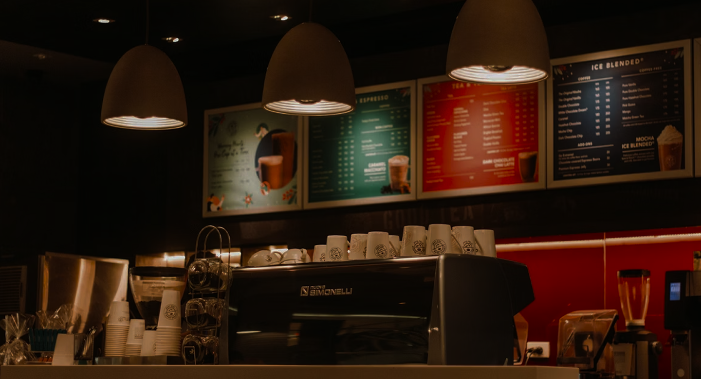
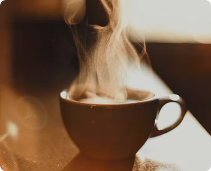
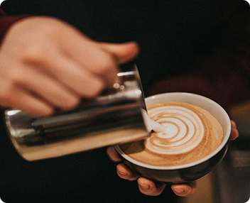
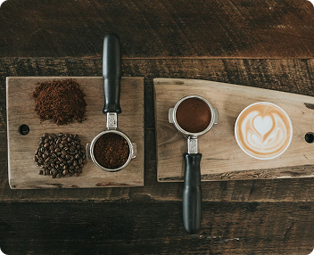

Seu refúgio para cafés especiais, aromas acolhedores e momentos inesquecíveis.
Cada página foi criada para trazer o aconchego e os sabores do café artesanal.

Descubra cafés especiais e bebidas artesanais.

Técnicas que transformam cada xícara em uma experiência única.

Conheça a trajetória e cultura do café ao redor do mundo.
Compartilhar experiências e sabores que tornam cada momento ainda mais especial.